An Eastern Fantasy World

My Role
Designer Coder (Individual Work)
Timeframe
2020.2.1 - 2020.5.7
Tool
D3.js Python R
We are familiar with the western fantasy world, like Harry Potter, Game of Thrones. But do you know the eastern fantasy world? Maybe you are an anime fan and you are familiar with One Piece, Naruto. However, I guess you never watch, even didn’t hear this anime-the Twelve Kingdoms.
The Twelve Kingdoms is my favorite anime. They originally are a series of fantasy novels wrote by Fuyumi Ono. Because it’s famous, the work was made into an anime in 2002. It’s not the best-seller compared with Naruto or One Piece. But it has loyal audiences. In Bilibili (like Chinese Youtube), it has over 4,437,000 views. Over 106,000 screen bullets will stay with you when you watch the anime. In addition, the novels are available for online reading and download. It's convenient for me to reuse. I’d like to invite you to enjoy the story of the Twelve Kingdoms through data visualization.
The Design Process of "An Eastern Fantasy World"
The idea
When I was a child, I met the anime “The Twelve Kingdoms”. It’s a different anime, totally different from others. The anime pushed me to read the original book series. It has interesting and dangerous adventures, with rich contents of awaking feminine consciousness and ancient Asian cultural value. Even today, it’s still my favorite anime.
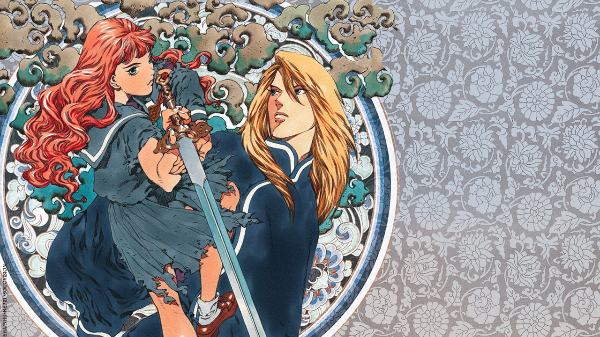
The Cover of the First Book of The Twelve Kingdoms
When professor Lenny asked me, what I want to do for the capstone. I have no idea. he told me I can do anything, anything I’m interested in or loved. His words reminded me of the anime. Yes, it’s the last chance for me to have fun before graduation. I need to earn a living after graduation. So, why not creating a data viz project for my favorite anime? I began to search for other data viz projects related to book series, film, and television works. Actually, I found two precedents that influenced my capstone.
- Fifty chapters of adorable cuteness Cardcaptor Sakura by Nadieh Bremer
It’s a data viz project of the anime Cardcaptor Sakura. I loved to watch Cardcaptor Sakura when I was young. I love she used different colors to reveal different characters. And the lines among the main characters also present their relationship. She did very well in bubble charts, which inspired me to show characters’ relationships through bubbles.
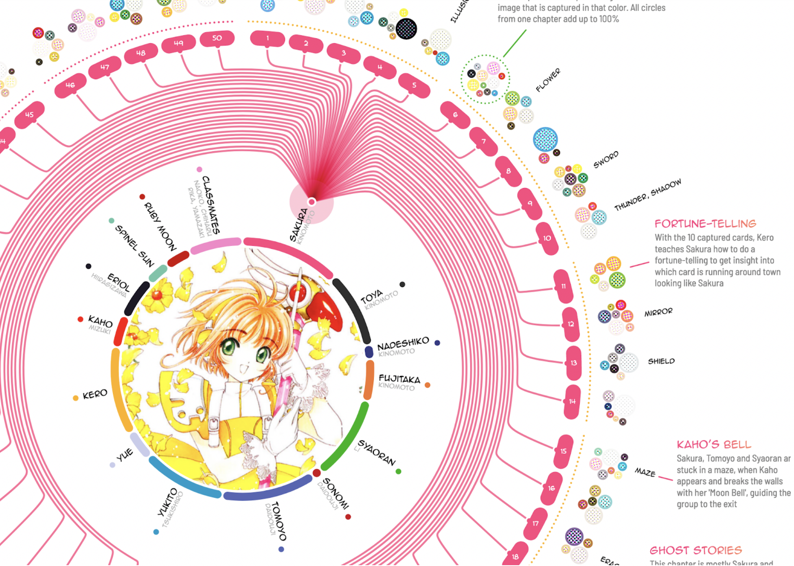 - Anne Sexton: Poetry Between Pain by Deb Pang Davis
Deb is my classmate and a brilliant data-driven storyteller. She did text and sentiment analysis of Anne Sexton’s book series. Then she told us the story behind the data. Because The Twelve Kingdoms originally are a series of fantasy novels wrote by Fuyumi Ono.
Deb’s work reminded me that I can do text analysis of The Twelve Kingdoms.
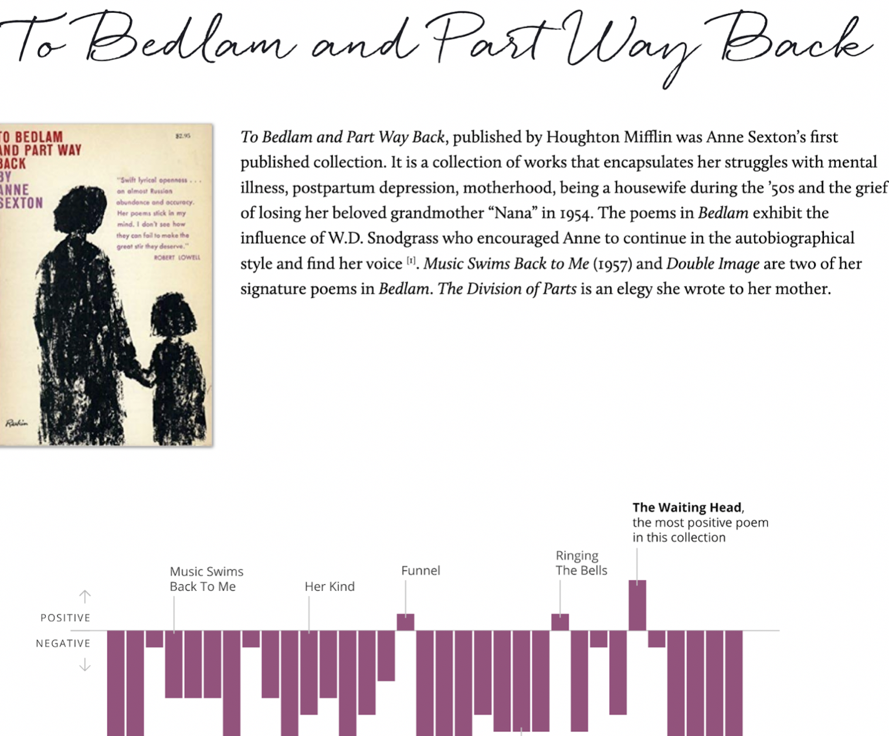
The data
After going through precedents, I began to organize my project. I wanted to analyze both book series and anime. But the original book series are Japanese, I can’t understand. And the Chinese version book series I didn’t find relative packages in R (a programming language, widely used among statisticians and data miners for developing statistical software and data analysis) to analyze them. Luckily, I found fan translation, English version book series of The Twelve Kingdoms on the website Eugene Woodbury.
For the anime, I know an interesting Chinese video-sharing website called Bilibili. Bilibili is like Chinese YouTube, which is based in Shanghai, themed around animation, comic, and game (ACG). It has a special feature—a real-time commentary subtitle system that displays user comments as streams of moving subtitles overlaid on the video playback screen. Such subtitles are simultaneously broadcast to all viewers in real-time, creating a chat room experience in which users feel like watching and playing together with others.

On-time bullet screen comments fly from right to left on the screen.
The Twelve Kingdoms has over 4,437,000 views on Bilibili. Over 106,000 screen bullets will stay with you when you watch the anime. Due to the unique feature on Bilibili, I can drag and analyze the data of on-time bullet comments and bottom comments from the anime on the website. Maybe I can even compare the difference between the comments from the website and the findings of the text analysis of the book series. Well, the ideal is plump, the reality is very skinny. Quickly, I met tons of troubles. But let’s first look at the design.
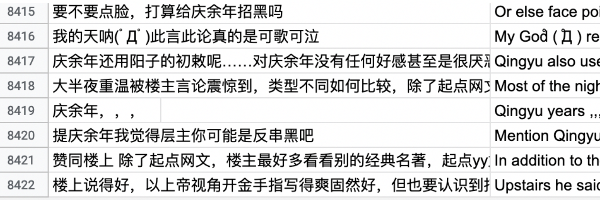
The data I scraped from Bilibili.
The design
After scratching data from the website, I used R to do proximity analysis to find out the relationships among words. The following image is what I got in R.
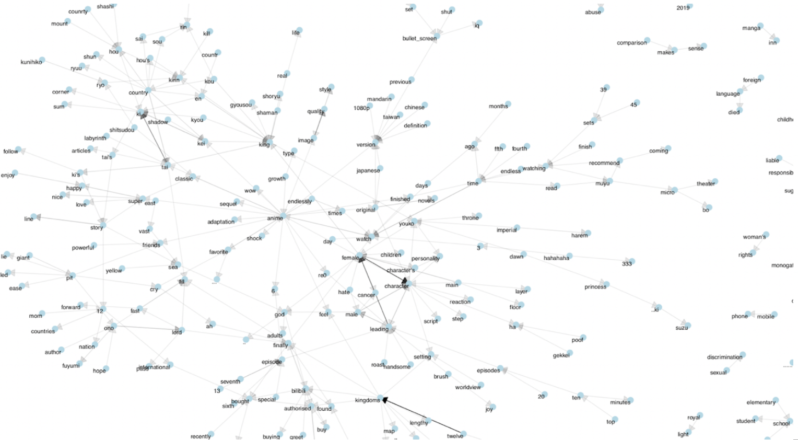
Rough n-gram chart I created through R
From the result, I thought the bubble chart is a great choice to present the relationships among words. The center bubble should be the biggest bubble (often represent the main character like Youko, Kirin), other smaller bubbles are connected by it. All bubbles and the lines should be interactive, users can interact with them to get more info.
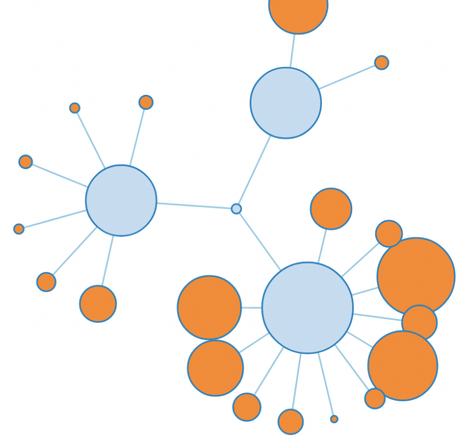
One bubble chart I tried
In this case, I will focus on the tree structure to visualize my data of the novels and the comments in Bilibili.
- First of all, I will introduce the work The Twelve Kingdoms. Because it’s an unpopular work in the eastern anime market. I will shortly introduce the world view and special settings. 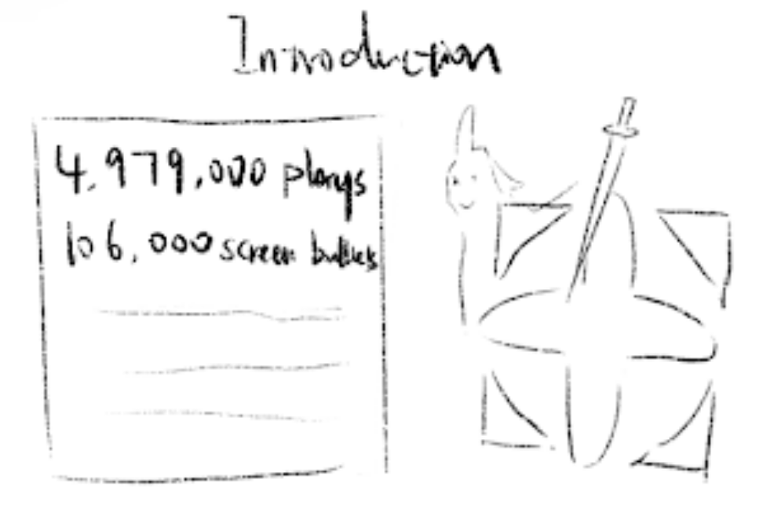
- Secondly, I will cut tons of bubbles into different groups to help users to understand. I don’t want to show everything at the beginning and make audiences feel lost. So, secondary groups will help a lot. At the same time, I will add detailed descriptions for these groups to help audiences further understanding.
For example, the author didn’t finish the story about Taiki and the king of Tai. So a lot of audiences complained that they fell into the pit, which is dug by Ono. And now they can’t leave. It’s pretty fun.
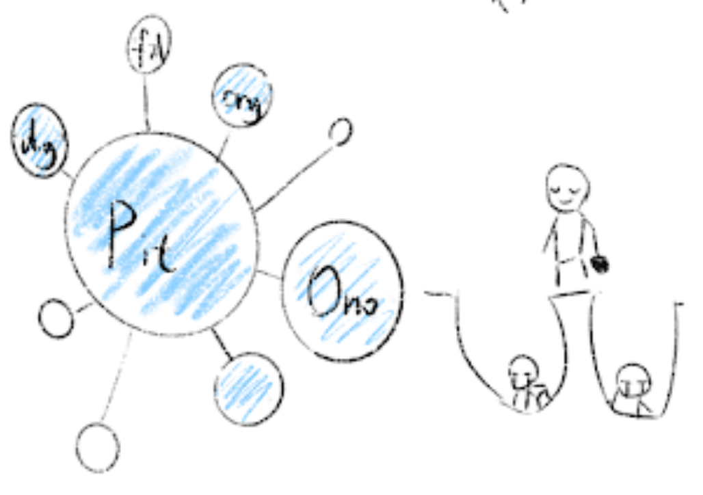
- At the bottom part, I want readers can leave their comments about the data visualization of The Twelve Kingdoms. They can go through each other’s comments. 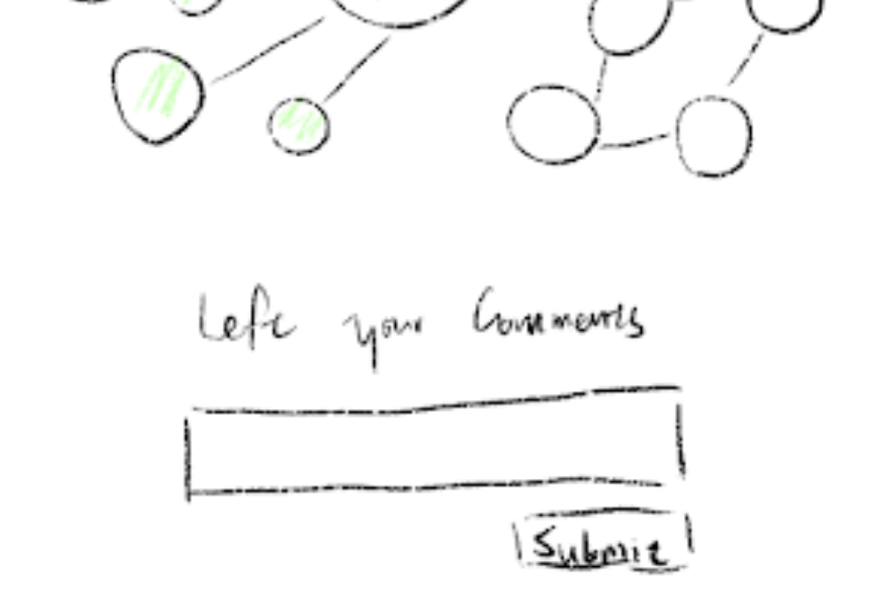
The troubles
As I mentioned before, I met tons of troubles I never imaged before. I overcame most of them, and some still need to do more work. I divided those troubles into three groups: scrape and clean the data, build the website, improve the website.
- Scrape and Clean the Data
I spent nearly the whole of February to scrape and clean the data from the website Bilibili. And I met 3 problems:
- Scraping Chinese is different from English. I learn how to use library pandas to scrape Chinese.
- Because I’m in the US now, I can’t load the comments unless use VPN. So, I asked my friend in China to run the code on his computer.
- Another problem is I have no idea how to do n-gram in Python. Even though I watched some tutorials, it’s still so hard for me to understand. Fortunately, Deb recommended the book Text Mining with R to me. Do n-gram by R is much easier. In this way, I successfully found out the relationships between characters, and words.
Clean and roughly visualize the data by R
- Build the Website
Then I focused on the visualization by d3 and website building during March. I tried different style charts, change the thickness of the line between bubbles, organize the context and charts.
I tried to create bubbles by D3 after solving the n-gram problem. The challenge at this step is to create force among bubbles and change the stroke between them into different thicknesses. Because I created treemap charts by D3 last semester, I wasn’t stuck with the JSON file for a long time.
I know my article will be very long, since there are seven book series, bullet screen comments and bottom comments will be visualized and analyzed. So, I need to organize my website very convenient for users to go through.
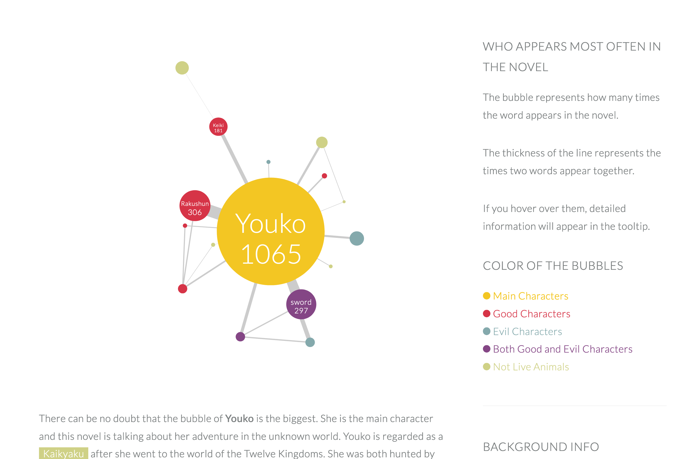Build the website, combine the charts and contents.
- Improve the Website
For the tooltip in bubble charts, I drew the pictures for different characters, even the sword.
And I added detail descriptions for people who are not familiar with the characters to understand who they are. And you can also click the highlighted words in the main texts to see detail descriptions on the sidebar. If you are interested, you can click the button “Read the Book” to read English version book series. For books 6 and 7, they are composed of several short stories. So, I cut them into separate bubble charts.
Usually, more bullet comments mean the part is more important. The highest numbers of the episode often mean the climax of the story. So, I want to show both the distribution of the comments and the climax video.
Because I want to know which moment is the climax part per episode, I combined the chart and the video of the minute with the highest number of comments. You can use the button to change the episode to see the change.
When you click the button to change the episode, the chart, video, and the texts will also be changed.
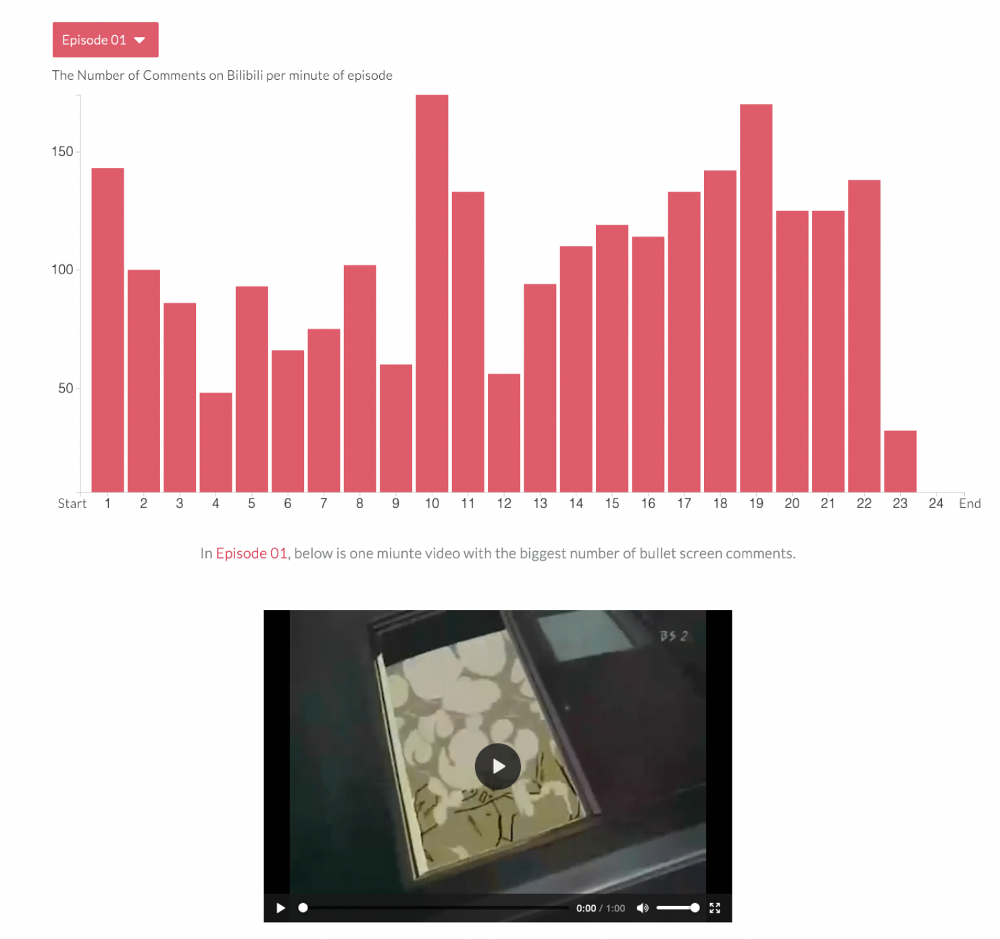Add the button for users to jump among episodes.
Final thoughts
At the beginning of the semester, I found this image on the website. It’s about the process of the capstone. It’s funny so I saved it. In the beginning, I want to show the book series, bullet screen comments, and bottom comments. Just like this horse, very ambitious.
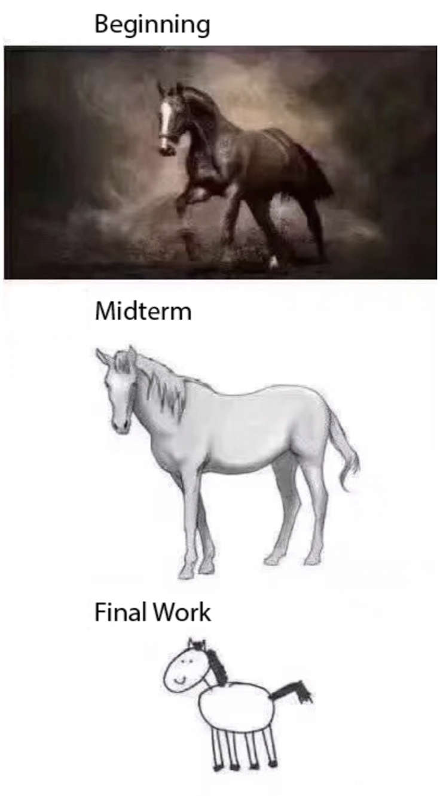
The capstone process of horse painting
Until the midterm, I felt like things are too overwhelming. I had no time to analyze the comments. So, my plan was changed, Just like this horse.
When the due date is getting close, I was more afraid my final work will become this horse. It’s cute but I don’t want to. It’s harder because of the home study. I need to keep myself away from computer games, TV dramas, and romantic novels. Luckily, I need to report my progress per week to Professor Cairo and Lenny, who pushed me to work hard. And you can see my work is not like the cute, unfinished horse.
I can’t say my work is perfect. But it’s finished. And that makes me happy;) and I hope this blog has been interesting, even valuable for you. Thank you for reading. And see you next time! And here is the project link.